3. Jugar al fútbol¶
En esta práctica vamos a programar a dos personajes que jugarán al fútbol pasándose un balón de uno a otro.
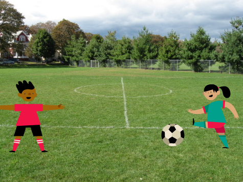{kind=link}
Iniciamos el editor de Scratch.
Pulsamos el botón idioma
 en la barra
superior y elegimos Español.
en la barra
superior y elegimos Español.Pulsamos el botón de tutoriales
 y
luego el botón de animación .
y
luego el botón de animación .Seleccionamos el tutorial "Deslizarse" y lo visualizamos.
Después seleccionamos el tutorial "Animar un objeto" y lo visualizamos.
En estos dos tutoriales veremos el funcionamiento básico del programa. Una vez terminados los tutoriales vamos a crear un programa en el que dos personajes dan patadas a un balón que se desplaza por la pantalla.
Borramos el objeto gato presionando sobre el icono del cubo de basura.

Ahora escogemos un fondo adecuado para nuestro juego. Cambiamos el fondo de escenario a un campo de futbol.
Pulsamos el botón elige un fondo
 .
.Buscamos en la sección Exteriores.
y seleccionamos el fondo Playing Field.
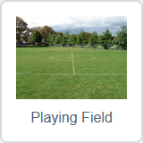A continuación añadimos un nuevo personaje, un niño.
Pulsamos el botón elige un objeto
 .
.Buscamos en la sección Gente.
y seleccionamos el objeto Ben.
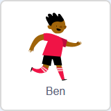Vamos a programar la posición inicial del niño. Movemos al niño a la posición deseada y en el botón movimiento 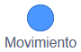 elegimos la instrucción .
En el botón apariencia 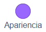 elegimos el disfraz inicial del niño.
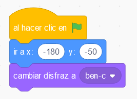Añadimos un nuevo personaje, una niña.
Pulsamos el botón elige un objeto
.Buscamos en la sección Gente.
y seleccionamos el objeto Jordyn.
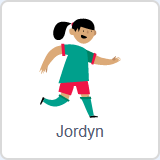Vamos a programar la posición inicial de la niña. Movemos a la niña a la posición deseada y en el botón movimiento elegimos la instrucción .
En el botón apariencia elegimos el disfraz inicial de la niña.

Por último, dentro del objeto Jordyn, pulsamos en la opción de dirección y fijamos el giro a -90 grados y de izquierda a derecha pulsando en las dos flechas enfrentadas. De esta manera la niña no quedará boca arriba al girar en sentido contrario.
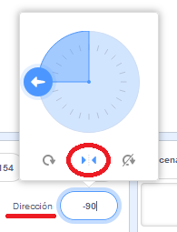Añadimos un nuevo personaje, un balón de futbol.
Pulsamos el botón elige un objeto
.Buscamos en la sección Deportes.
y seleccionamos el objeto Soccer Ball.
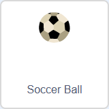Programamos el movimiento del balón con dos deslizamientos a la izquierda y dos deslizamientos a la derecha, siguiendo las instrucciones del tutorial. Los dos movimientos a cada lado se utilizan para que parezca que el balón sube y baja de un lado a otro.
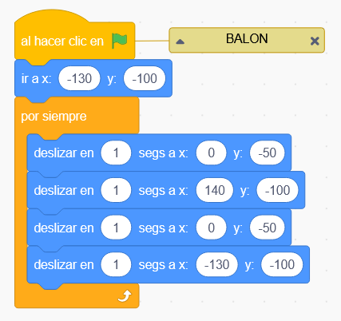Pulsamos la bandera verde
 para probar el funcionamiento del programa.
para probar el funcionamiento del programa.El balón debe moverse a un lado y a otro entre las piernas de los dos personajes.
Ahora vamos a coordinar a todos los objetos mediante mensajes para que los niños golpeen el balón cuando les llegue a los pies.
Primero modificamos el código del balón para que envíe mensajes al llegar a cada uno de los extremos.
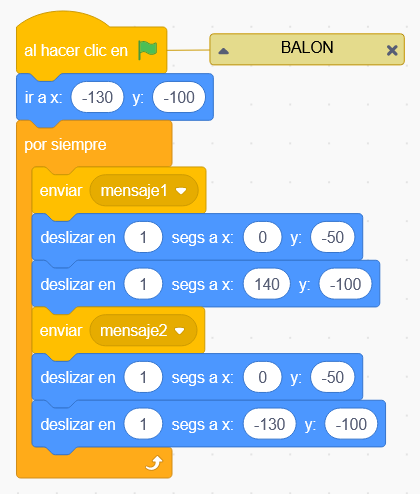El mensaje2 se consigue pulsando en nuevo mensaje para crearlo.
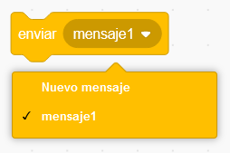 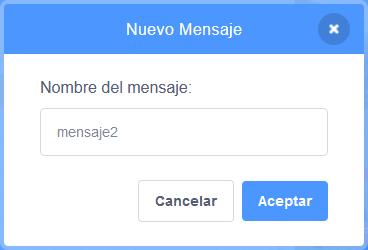Seleccionamos al objeto Ben para añadir el siguiente programa.
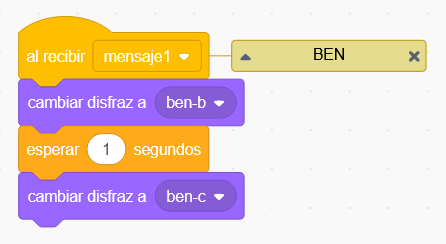Seleccionamos al objeto Jordyn para añadir el siguiente programa.
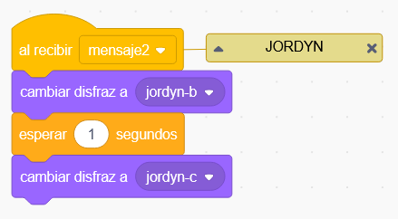Pulsamos la bandera verde
para probar el funcionamiento del programa.
{kind=link}
{kind=link}
{kind=link}
{kind=link}
{kind=link}
{kind=link}
{kind=link}
{kind=link}
Retos¶
Añade un nuevo personaje que se mueva dando vueltas pasando por las cuatro esquinas del campo de futbol.
Utiliza la orden deslizar en 1 segundo hasta una posición.
Añade un nuevo personaje, Casey, para que juegue al balón con los otros dos. El balón debe ir desde un personaje hasta el siguiente hasta que pase por los tres personajes y el ciclo vuelva a comenzar.
Añade otros dos personajes al juego desde la pestaña Deportes. Uno debe ser un lanzador (Pitcher) y el otro un bateador (Batter). El lanzador lanzará una pelota de baseball al bateador. El bateador dará un golpe a la pelota, que volverá al lanzador.